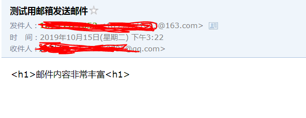
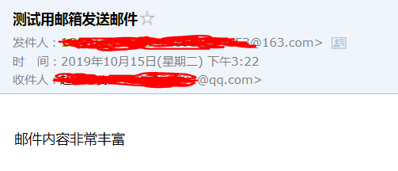
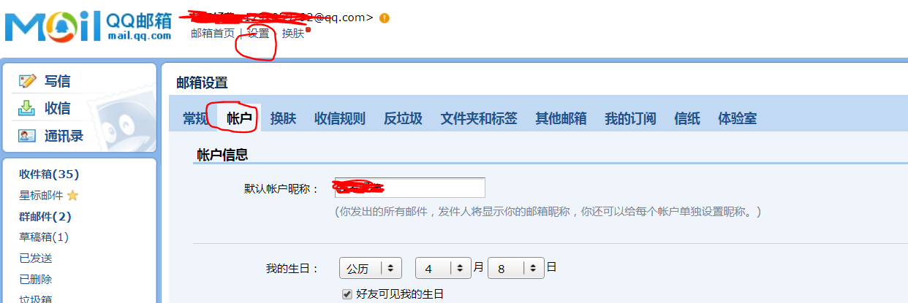
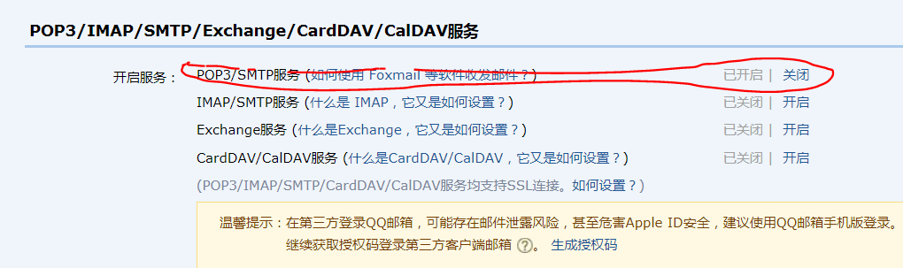

今天来记录一下如何使用java来发送邮件
之前项目有个需求，当产品出现故障时会把情况上送给服务器，服务器发送邮件将故障产品的位置以及故障信息等告知维修人员。发送邮件的接口不是我负责的，但是有兴趣了解一下
首先看一下实现的步骤，然后在讲讲有可能遇到的问题
1.引入javax.mail依赖，我用的是springboot，所以依赖是这样引的
<dependency>
<groupId>org.springframework.boot</groupId>
<artifactId>spring-boot-starter-mail</artifactId>
</dependency>没用springboot框架的，自己去找一下
2.构建邮件基本信息类
package com.example.demo.comment.sendemail;
import java.util.Properties;
/**
* 发送邮件需要使用的基本信息
*
* @author 860118060
*/
public class MailSenderInfo {
/**
* 发送邮件的服务器的IP和端口
*/
private String mailServerHost;
private String mailServerPort = "25";
/**
* 邮件发送者的地址
*/
private String fromAddress;
/**
* 邮件接收者的地址
*/
private String toAddress;
/**
* 登陆邮件发送服务器的用户名和密码
*/
private String userName;
private String password;
/**
* 是否需要身份验证
*/
private boolean validate = false;
/**
* 邮件主题
*/
private String subject;
/**
* 邮件的文本内容
*/
private String content;
/**
* 邮件附件的文件名
*/
private String[] attachFileNames;
/**
* 获得邮件会话属性
*/
public Properties getProperties() {
Properties p = new Properties();
p.put("mail.smtp.host", this.mailServerHost);
p.put("mail.smtp.port", this.mailServerPort);
p.put("mail.smtp.auth", validate ? "true" : "false");
return p;
}
public String getMailServerHost() {
return mailServerHost;
}
public void setMailServerHost(String mailServerHost) {
this.mailServerHost = mailServerHost;
}
public String getMailServerPort() {
return mailServerPort;
}
public void setMailServerPort(String mailServerPort) {
this.mailServerPort = mailServerPort;
}
public boolean isValidate() {
return validate;
}
public void setValidate(boolean validate) {
this.validate = validate;
}
public String[] getAttachFileNames() {
return attachFileNames;
}
public void setAttachFileNames(String[] fileNames) {
this.attachFileNames = fileNames;
}
public String getFromAddress() {
return fromAddress;
}
public void setFromAddress(String fromAddress) {
this.fromAddress = fromAddress;
}
public String getPassword() {
return password;
}
public void setPassword(String password) {
this.password = password;
}
public String getToAddress() {
return toAddress;
}
public void setToAddress(String toAddress) {
this.toAddress = toAddress;
}
public String getUserName() {
return userName;
}
public void setUserName(String userName) {
this.userName = userName;
}
public String getSubject() {
return subject;
}
public void setSubject(String subject) {
this.subject = subject;
}
public String getContent() {
return content;
}
public void setContent(String textContent) {
this.content = textContent;
}
}3.构建邮件发送器
package com.example.demo.comment.sendemail;
import java.util.Date;
import java.util.Properties;
import javax.mail.Address;
import javax.mail.BodyPart;
import javax.mail.Message;
import javax.mail.MessagingException;
import javax.mail.Multipart;
import javax.mail.Session;
import javax.mail.Transport;
import javax.mail.internet.InternetAddress;
import javax.mail.internet.MimeBodyPart;
import javax.mail.internet.MimeMessage;
import javax.mail.internet.MimeMultipart;
/**
* 简单邮件（不带附件的邮件）发送器
*/
public class SimpleMailSender {
/**
* 以文本格式发送邮件
* @param mailInfo 待发送的邮件的信息
*/
public static boolean sendTextMail(MailSenderInfo mailInfo) {
// 判断是否需要身份认证
MyAuthenticator authenticator = null;
Properties pro = mailInfo.getProperties();
if (mailInfo.isValidate()) {
// 如果需要身份认证，则创建一个密码验证器
authenticator = new MyAuthenticator(mailInfo.getUserName(), mailInfo.getPassword());
}
// 根据邮件会话属性和密码验证器构造一个发送邮件的session
Session sendMailSession = Session.getDefaultInstance(pro,authenticator);
try {
// 根据session创建一个邮件消息
Message mailMessage = new MimeMessage(sendMailSession);
// 创建邮件发送者地址
Address from = new InternetAddress(mailInfo.getFromAddress());
// 设置邮件消息的发送者
mailMessage.setFrom(from);
// 创建邮件的接收者地址，并设置到邮件消息中
Address to = new InternetAddress(mailInfo.getToAddress());
mailMessage.setRecipient(Message.RecipientType.TO,to);
// 设置邮件消息的主题
mailMessage.setSubject(mailInfo.getSubject());
// 设置邮件消息发送的时间
mailMessage.setSentDate(new Date());
// 设置邮件消息的主要内容
String mailContent = mailInfo.getContent();
mailMessage.setText(mailContent);
// 发送邮件
Transport.send(mailMessage);
return true;
} catch (MessagingException ex) {
ex.printStackTrace();
}
return false;
}
/**
* 以HTML格式发送邮件
* @param mailInfo 待发送的邮件信息
*/
public static boolean sendHtmlMail(MailSenderInfo mailInfo){
// 判断是否需要身份认证
MyAuthenticator authenticator = null;
Properties pro = mailInfo.getProperties();
//如果需要身份认证，则创建一个密码验证器
if (mailInfo.isValidate()) {
authenticator = new MyAuthenticator(mailInfo.getUserName(), mailInfo.getPassword());
}
// 根据邮件会话属性和密码验证器构造一个发送邮件的session
Session sendMailSession = Session.getDefaultInstance(pro,authenticator);
try {
// 根据session创建一个邮件消息
Message mailMessage = new MimeMessage(sendMailSession);
// 创建邮件发送者地址
Address from = new InternetAddress(mailInfo.getFromAddress());
// 设置邮件消息的发送者
mailMessage.setFrom(from);
// 创建邮件的接收者地址，并设置到邮件消息中
Address to = new InternetAddress(mailInfo.getToAddress());
// Message.RecipientType.TO属性表示接收者的类型为TO
mailMessage.setRecipient(Message.RecipientType.TO,to);
// 设置邮件消息的主题
mailMessage.setSubject(mailInfo.getSubject());
// 设置邮件消息发送的时间
mailMessage.setSentDate(new Date());
// MiniMultipart类是一个容器类，包含MimeBodyPart类型的对象
Multipart mainPart = new MimeMultipart();
// 创建一个包含HTML内容的MimeBodyPart
BodyPart html = new MimeBodyPart();
// 设置HTML内容
html.setContent(mailInfo.getContent(), "text/html; charset=utf-8");
mainPart.addBodyPart(html);
// 将MiniMultipart对象设置为邮件内容
mailMessage.setContent(mainPart);
// 发送邮件
Transport.send(mailMessage);
return true;
} catch (MessagingException ex) {
ex.printStackTrace();
}
return false;
}
}4.构建密码验证器
package com.example.demo.comment.sendemail;
import javax.mail.*;
/**
* @author 860118060
*/
public class MyAuthenticator extends Authenticator{
String userName=null;
String password=null;
public MyAuthenticator(){
}
public MyAuthenticator(String username, String password) {
this.userName = username;
this.password = password;
}
@Override
protected PasswordAuthentication getPasswordAuthentication(){
return new PasswordAuthentication(userName, password);
}
}至此准备工作都完成了,下面看一下如何调用吧
5.调用Demo
package com.example.demo.comment.sendemail;
public class SendEmailDemo {
public static void main(String[] args){
//这个类主要是设置邮件
MailSenderInfo mailInfo = new MailSenderInfo();
mailInfo.setMailServerHost("smtp.163.com");
mailInfo.setMailServerPort("25");
mailInfo.setValidate(true);
// 发送方邮箱
mailInfo.setUserName("xxxxxxxx@163.com");
// 发送方邮箱密码
mailInfo.setPassword("xxxxxxxx");
// 发送方邮箱
mailInfo.setFromAddress("xxxxxxxx@163.com");
// 接收方邮箱
mailInfo.setToAddress("xxxxxxxx@qq.com");
// 邮件标题
mailInfo.setSubject("测试用邮箱发送邮件");
// 邮件内容
mailInfo.setContent("<h1>邮件内容非常丰富<h1>");
//发送文体格式
SimpleMailSender.sendTextMail(mailInfo);
//发送html格式
SimpleMailSender.sendHtmlMail(mailInfo);
}
}这里有两种邮件发送格式


如果不出意外的话应该成功发送出两封邮件了，但是凡事都有万一，下面分析一下哪些问题会导致失败呢？
1.mailInfo.setMailServerHost("smtp.163.com");与mailInfo.setFromAddress("xxxxxxxx@163.com");这两句话。即如果你使用163smtp服务器，那么发送邮件地址就必须用163的邮箱，如果不的话，是不会发送成功的。
2.不要使用你刚刚注册过的邮箱在程序中发邮件，如果你的163邮箱是刚注册不久，那你就不要使用“smtp.163.com”。因为你发不出去。刚注册的邮箱是不会给你这种权限的，也就是你不能通过验证。要使用你经常用的邮箱，而且时间比较长的
3.qq邮箱作为发送方是有可能需要授权验证的。
授权如下：
在设置里面找到账户，往下拉找到并按照提示开启授权，然后将得到的授权码作为邮箱密码，即可成功发送邮件


最后顺便附上常用邮箱：
常用的邮箱服务器（SMTP、POP3）地址、端口
sina.com:
POP3服务器地址:pop3.sina.com.cn（端口：110） SMTP服务器地址:smtp.sina.com.cn（端口：25）
sinaVIP：
POP3服务器:pop3.vip.sina.com （端口：110） SMTP服务器:smtp.vip.sina.com （端口：25）
sohu.com:
POP3服务器地址:pop3.sohu.com（端口：110） SMTP服务器地址:smtp.sohu.com（端口：25）
126邮箱：
POP3服务器地址:pop.126.com（端口：110） SMTP服务器地址:smtp.126.com（端口：25）
139邮箱：
POP3服务器地址：POP.139.com（端口：110） SMTP服务器地址：SMTP.139.com(端口：25)
163.com:
POP3服务器地址:pop.163.com（端口：110） SMTP服务器地址:smtp.163.com（端口：25）
QQ邮箱
POP3服务器地址：pop.qq.com（端口：110）
SMTP服务器地址：smtp.qq.com （端口：25）
QQ企业邮箱
POP3服务器地址：pop.exmail.qq.com （SSL启用 端口：995） SMTP服务器地址：smtp.exmail.qq.com（SSL启用 端口：587/465）
yahoo.com:
POP3服务器地址:pop.mail.yahoo.com SMTP服务器地址:smtp.mail.yahoo.com
yahoo.com.cn:
POP3服务器地址:pop.mail.yahoo.com.cn（端口：995） SMTP服务器地址:smtp.mail.yahoo.com.cn（端口：587
HotMail
POP3服务器地址：pop3.live.com （端口：995） SMTP服务器地址：smtp.live.com （端口：587）
gmail(google.com)
POP3服务器地址:pop.gmail.com（SSL启用 端口：995） SMTP服务器地址:smtp.gmail.com（SSL启用 端口：587）
263.net:
POP3服务器地址:pop3.263.net（端口：110） SMTP服务器地址:smtp.263.net（端口：25）
263.net.cn:
POP3服务器地址:pop.263.net.cn（端口：110） SMTP服务器地址:smtp.263.net.cn（端口：25）
x263.net:
POP3服务器地址:pop.x263.net（端口：110） SMTP服务器地址:smtp.x263.net（端口：25）
21cn.com:
POP3服务器地址:pop.21cn.com（端口：110） SMTP服务器地址:smtp.21cn.com（端口：25）
Foxmail：
POP3服务器地址:POP.foxmail.com（端口：110） SMTP服务器地址:SMTP.foxmail.com（端口：25）
china.com:
POP3服务器地址:pop.china.com（端口：110） SMTP服务器地址:smtp.china.com（端口：25）
tom.com:
POP3服务器地址:pop.tom.com（端口：110） SMTP服务器地址:smtp.tom.com（端口：25）
etang.com:
POP3服务器地址:pop.etang.com SMTP服务器地址:smtp.etang.com
在多说一句，本文档不属于教程，只是对自己学习的记录，大家可以参考一下，如果有什么错误欢迎指出
有时间在看看怎么在邮件中添加附件并分享出来
本次学习主要参考：https://www.cnblogs.com/kiwifly/p/4435867.html
上次时间有限就没有看如何添加附件，这次有时间整出来了，因为太简单了所以就接着写了。
只需要将发送html邮件的方法改动一下就行了，看一下代码
/**
* 以HTML格式发送邮件
* @param mailInfo 待发送的邮件信息
*/
public static boolean sendHtmlMail(MailSenderInfo mailInfo){
// 判断是否需要身份认证
MyAuthenticator authenticator = null;
Properties pro = mailInfo.getProperties();
//如果需要身份认证，则创建一个密码验证器
if (mailInfo.isValidate()) {
authenticator = new MyAuthenticator(mailInfo.getUserName(), mailInfo.getPassword());
}
// 根据邮件会话属性和密码验证器构造一个发送邮件的session
Session sendMailSession = Session.getDefaultInstance(pro,authenticator);
try {
// 根据session创建一个邮件消息
Message mailMessage = new MimeMessage(sendMailSession);
// 创建邮件发送者地址
Address from = new InternetAddress(mailInfo.getFromAddress());
// 设置邮件消息的发送者
mailMessage.setFrom(from);
// 创建邮件的接收者地址，并设置到邮件消息中
Address to = new InternetAddress(mailInfo.getToAddress());
// Message.RecipientType.TO属性表示接收者的类型为TO
mailMessage.setRecipient(Message.RecipientType.TO,to);
// 设置邮件消息的主题
mailMessage.setSubject(mailInfo.getSubject());
// 设置邮件消息发送的时间
mailMessage.setSentDate(new Date());
// MiniMultipart类是一个容器类，包含MimeBodyPart类型的对象
Multipart mainPart = new MimeMultipart();
// 创建一个包含HTML内容的MimeBodyPart
BodyPart html = new MimeBodyPart();
// 设置HTML内容
html.setContent(mailInfo.getContent(), "text/html; charset=utf-8");
mainPart.addBodyPart(html);
//添加邮件
// 注意这里是MimeBodyPart
MimeBodyPart part = new MimeBodyPart();
// 这里放附件的路径(我就直接放桌面了)
part.attachFile("C:\\Users\\xxxxx\\Desktop\\123.PNG");
//多个附件也是一样的,创建多个MimeBodyPart ,最后放入mainPart 里面
mainPart.addBodyPart(part);
// 将MiniMultipart对象设置为邮件内容
mailMessage.setContent(mainPart);
// 发送邮件
Transport.send(mailMessage);
return true;
} catch (MessagingException ex) {
ex.printStackTrace();
}
return false;
}